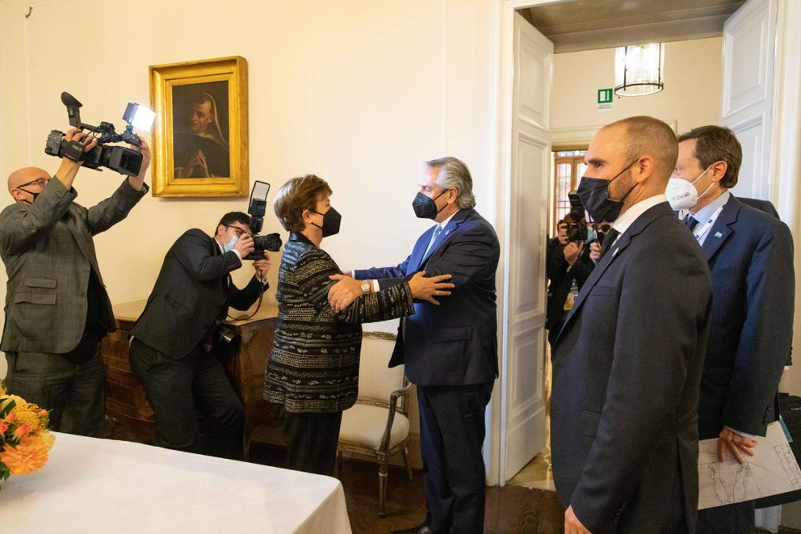

FMI: el Gobierno le pone presión al organismo para cerrar un acuerdo con el envío del plan plurianual al Congreso
El Poder Ejecutivo tenía tomada la decisión de acelerar hacia un acuerdo con el Fondo antes de los comicios legislativos. En el oficialismo no descartan retomar una última ronda de conversaciones con el staff antes de presentar el proyecto al Congreso.

El Poder Ejecutivo tenía tomada la decisión de acelerar hacia un acuerdo con el Fondo antes de los comicios legislativos
El fin del proceso electoral aceleró una decisión que ya estaba tomada dentro del Gobierno: dar un giro en las negociaciones con el Fondo Monetario y destrabar el acuerdo primero con la búsqueda de una ley que dé “impulso” político a los números que el Poder Ejecutivo cruza con los técnicos del organismo. De esta forma, le pasará la pelota de la decisión al FMI con la premisa de que esas serán las proyecciones macroeconómicas que propondrá el país y con las que se plantará en futuras discusiones con el equipo técnico del organismo.
La intención de avanzar hacia un programa con el Fondo de manera más decidida tras el paso por las urnas ya rondaba los círculos de decisión más altos del Frente de Todos desde antes del resultado del domingo, más allá de que el mensaje presidencial en que Alberto Fernández anticipó el envío del proyecto fue difundido minutos después de que se conocieran los primeros datos oficiales de las legislativas.
Esto dejó entrever, además, que para la coalición de gobierno plantear la necesidad de un acercamiento al Fondo de una manera como la que se anunció este domingo en época de campaña era inconveniente políticamente. Superada la instancia electoral, entonces, el Gobierno terminará de darle forma al proyecto de ley que incluirá estimaciones económicas para los próximos años.
El anuncio presidencial abrió una ventana de dos semanas en la que, según especularon desde un despacho oficial ante la consulta de Infobae, podrían retomarse los contactos a nivel técnico con el staff del Fondo Monetario para afinar distancias sobre las proyecciones macro que estarán incluidas en el programa financiero que reemplace al Stand-By firmado en 2018, por un nuevo Extended Fund Facilities (EFF) que reestructurará la deuda a un plazo de diez años.
El Gobierno había aprobado en el Congreso un proyecto de ley para que cualquier programa con el FMI tenga que tener aval parlamentario
De todas formas, según aclararan desde el Poder Ejecutivo, si en esos 15 días antes de que el Gobierno presente ante el Congreso el proyecto de ley que Alberto Fernández bautizó “programa económico plurianual para el desarrollo sustentable”, el Ministerio de Economía no llegara a un acuerdo con el staff técnico del Fondo, el oficialismo buscará igualmente aprobar esos números en el parlamento. La lógica de esa estrategia sería pasarle la presión al Fondo Monetario, al que en las últimas semanas el propio Fernández y también Guzmán criticaron abiertamente por la demora en la resolución de las negociaciones. “¿Con qué autoridad el FMI después puede rechazar un programa económico plurianual aprobado en el Congreso?”, se preguntaban desde un despacho oficial este lunes por la mañana.
Un programa plurianual incluye típicamente estimaciones de variables críticas que forman parte de las deliberaciones con el FMI. Entre ellas, el sendero de reducción del déficit fiscal de los próximos años, cómo será la velocidad de recorte en las tasas de inflación, proyecciones de variaciación del PBI, nivel de reservas en el Banco Central y, en ese sentido, cómo deberían ser de acuerdo a este último factor, los controles de capitales. Habrá que ver cuáles de todas esas variables terminará por incluir el Poder Ejecutivo para su discusión parlamentaria.
Los números plurianuales son decisivos para la puesta en marcha de un programa financiero como el que negocia la Argentina, que tiene un plazo de diez años y que incluiría un plazo de gracia de tres años antes de que el país comenzara a repagar el préstamo de 2018. Eso sucede porque el sendero de pagos que saldrá de las negociaciones estarán influidos, por ejemplo, por el nivel de reservas internacionales en el Banco Central y por el déficit, es decir, por las necesidades de financiamiento que tenga el Estado.
Guzmán había tenido una última reunión técnica con el FMI en Roma.
En rigor, no es la primera vez que el Gobierno nacional habla sobre la presentación de proyecciones económicas con un horizonte de mediano plazo. A fines de 2020, por lo pronto, el ministro Guzmán ya hablaba en público sobre la elaboración de un programa plurianual en el que las estimaciones económicas para los próximos años sean una suerte de “hoja de ruta” de gestión de la política económica. Pero la demora en las conversaciones con el Fondo Monetario lo aplazaron hasta que este domingo Alberto Fernández lo puso en agenda nuevamente.
Incluso en los meses de elaboración del Presupuesto 2022 ya ingresado pero sin tratamiento aún en el Congreso la idea de proyectar algunas variables macro hacia los próximos años también formaba parte de las posibilidades. Semanas antes de la puntada final al presupuesto algunos funcionarios todavía esperaban que esas estimaciones estuvieran incluidas en la ley de leyes, lo que tampoco sucedió.
Los números del proyecto de ingresos y gastos que aún no tuvo debate en la Cámara de Diputados, afirman cerca de Guzmán, “son los mismos que hubiéramos presentado si no estuviéramos en negociación con el FMI”, con lo que buscan sacarle al Presupuesto cualquier pátina de injerencia del staff, algo que debe leerse en clave de las tensiones internas en el Frente de Todos que recrudecieron tras las PASO de septiembre.
Sin ir más lejos, este lunes se cumplen dos meses de la presentación del Presupuesto 2022 en el Congreso sin que haya habido aún ninguna reunión de comisiones para comenzar su debate. El anuncio presidencial del proyecto de metas plurianuales no modificó los planes de las autoridades de la Cámara baja, que preside Sergio Massa y que esperan entre hoy y este martes definir cómo comenzaría el tratamiento en comisiones o, al menos, con reuniones preliminares con funcionarios de Economía.